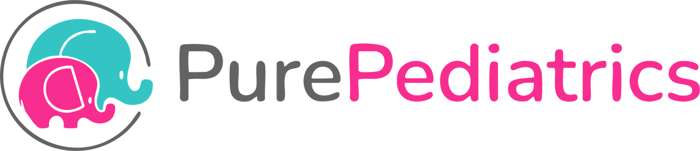
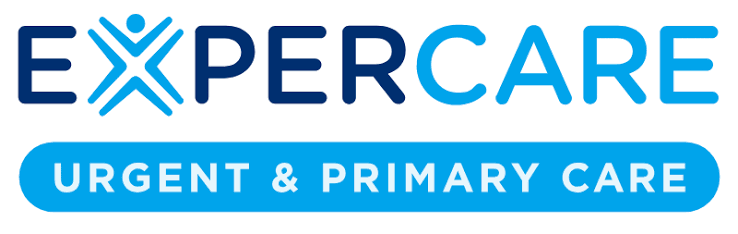
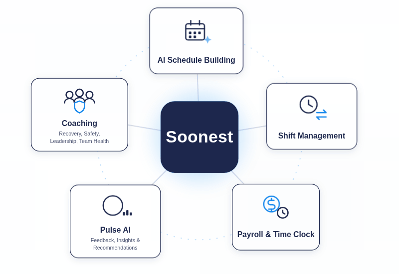
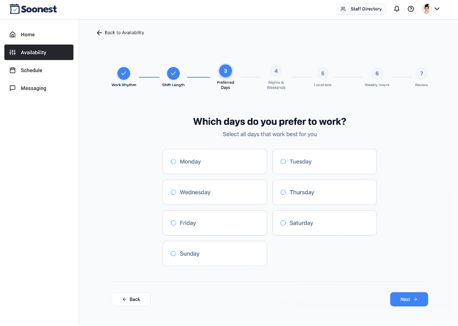
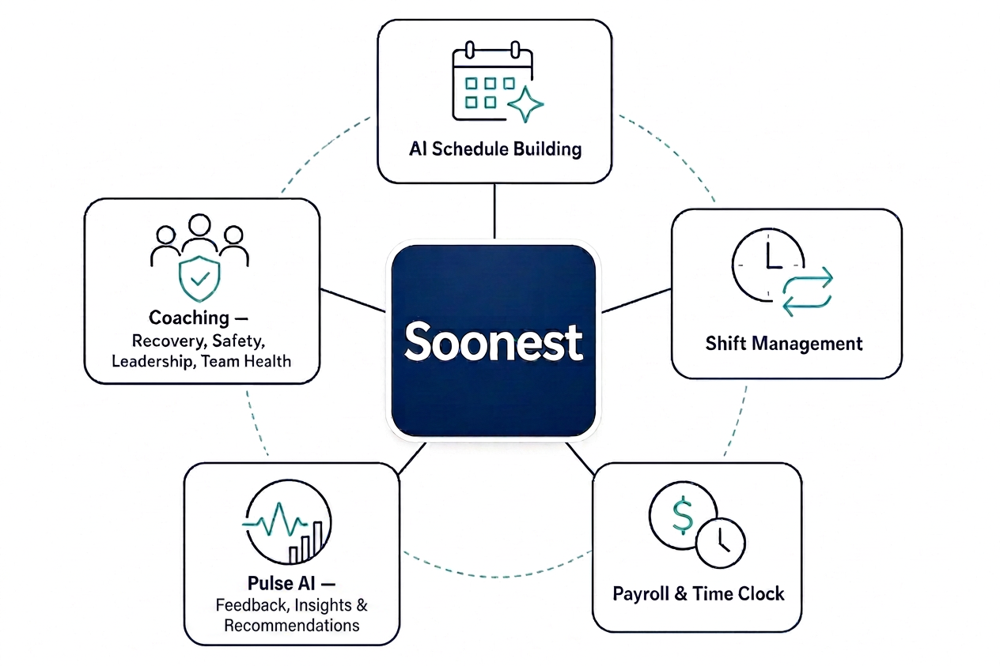
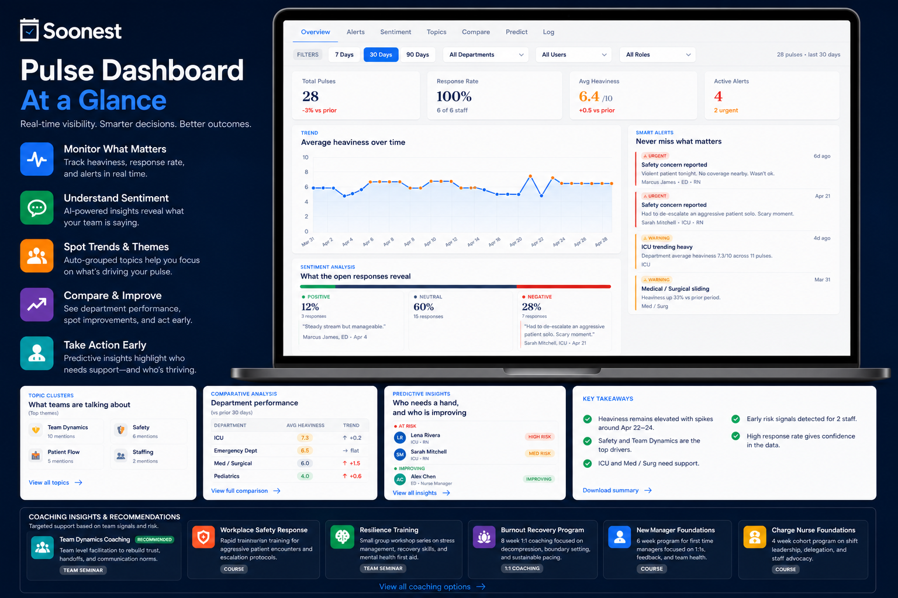
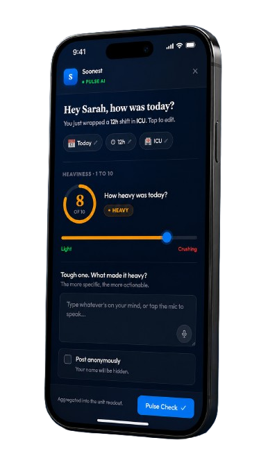

Trusted by healthcare organizations




From pediatricians to support staff, automatically build fair, compliant schedules across your pediatric office.

Trusted by healthcare organizations


Preferences get collected and ignored, admins spend hours every cycle reworking the same problems, and when nothing changes, people leave.
When a pediatrician or staff member asks for a lighter month, there's no structured way for that to change the schedule. When people can't influence their own hours, burnout follows.
47% of physicians report burnoutCollecting requests, reworking the schedule when someone calls out, and handling swaps takes 15 to 20 or more hours every scheduling cycle, on top of everything else on an office manager's plate.
15 to 20+ hours lost per scheduling cycleWhen the schedule never adjusts, people leave, and replacing one provider costs $60K to $100K or more.
$60K–$100K+ to replace one providerSoonest flags burnout risk early for pediatricians and staff members, and that signal shapes next month's schedule and points to the right coaching.
Tell us about your providers, staff roles, and schedule structure, and we'll tailor a demo to your scheduling setup.
Get a DemoSoonest was designed from the ground up to tackle the scheduling-linked burnout crisis sweeping across healthcare providers.
Every office gets a dedicated Schedule Assistant, a real person who sets up your office's rules and steps in for any questions that come up along the way.
Scheduling, shift management, payroll, messaging, and coaching all live in one platform, so you're not juggling multiple tools and budgets.
Pediatricians and support staff set preferences, trade shifts, clock in, and check in after each shift, and Soonest uses that information to shape the schedule and recommend coaching.
Pediatricians and support staff set preferences, admins set rules, and the solver handles the rest. Multi-role, multi-site schedules resolve at the same time.

Pediatricians and staff self-serve, and you set whether admin approval is required.

Hours are tracked inside the scheduling platform and export directly to ADP, Paycom, Paylocity, or any provider.
Payroll & Clock
After each shift, pediatricians and support staff rate how heavy it felt and can add what drove it. Pulse AI surfaces burnout signals, safety flags, and at-risk staff, so you can act before it becomes a retention problem.

Pulse AI identifies what your team needs, and coaching delivers it, with programs recommended from your office's own data.

Send us your specialties, call structure, and headcount in whatever format you have it. We'll build the demo around your actual scheduling setup.